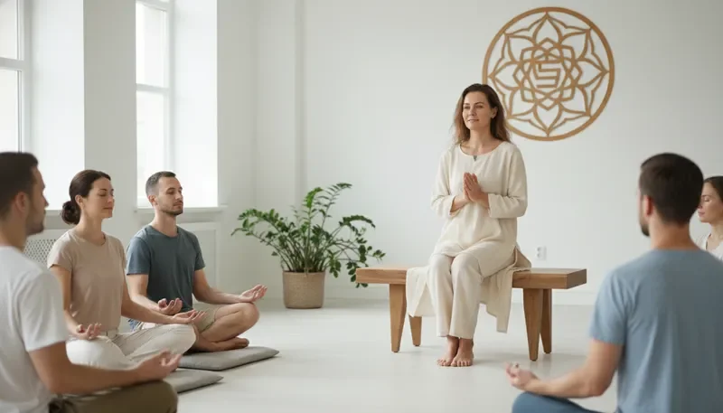

הסיפור שלי
שמי אילנית שייט שרון, ואני מתמחה ברפואה אינטגרטיבית מאחדת - גישה ייחודית המשלבת את החכמה העתיקה של הרפואה המסורתית עם הידע המודרני של המדע העכשווי. המסע שלי בעולם הריפוי ההוליסטי החל לפני למעלה מעשור, כאשר חוויתי בעצמי את הכוח המדהים של הטיפולים המשלימים.
לאחר שנים של לימודים מעמיקים במגוון תחומים - רפואה סינית מסורתית, דיקור, צמחי מרפא, ריפוי אנרגטי, מדיטציה ויוגה - הבנתי שהריפוי האמיתי מתרחש כאשר אנו מטפלים באדם כמכלול שלם, ולא רק בתסמינים הפיזיים.
הגישה שלי מבוססת על האמונה שכל אדם נושא בתוכו את הכוח לרפא את עצמו. תפקידי כמטפלת הוא להדריך, לתמוך וליצור את התנאים המיטביים לתהליך הריפוי הטבעי של הגוף והנפש.
